LLMs Can Play (Global) Games
The communication channel that enables coordination is also the channel through which regimes suppress it. I embed seven LLMs in the Morris–Shin (2003) regime change global game, conveying private signals as natural-language intelligence briefings. Across 1,800 country-periods and 45,000 decisions, join rates track the theoretical attack mass with mean r = +0.80 (p < 0.001 for every model), collapse to r ≈ 0 under scrambled briefings, and invert to r = −0.72 under flipped signals. The pattern reflects payoff structure, not sentiment: varying benefit/cost narratives shifts cutoffs in lockstep with theory (r = +0.97)—a 50 pp swing invisible to any text classifier. Surveillance poisons the communication channel: expressed joining falls by ~13.5 pp while second-order beliefs shift by less than 1 pp. Agents self-censor while interpreting others’ silence as genuine.
1The Setup
Imagine a country where citizens must independently decide whether to join an uprising or stay home. The regime has some hidden strength θ. If enough people join—if the attack mass exceeds θ—the regime falls and joiners win. If not enough join, the regime survives and joiners are punished.
Each citizen receives a noisy private signal about regime strength, delivered as a natural-language intelligence briefing. Nobody knows exactly how strong the regime is; nobody knows what signals others received. Everyone must decide simultaneously.
This is a global game in the sense of Carlsson & van Damme (1993) and Morris & Shin (1998, 2003). The incomplete-information structure eliminates the multiplicity of equilibria that plagues complete-information coordination games.The question: when LLM agents play this game, do they behave like the Bayesian rational players that theory assumes? And if so, can a social planner exploit this rationality by manipulating the information environment?
2The Theory
Each citizen i observes a private signal:
Payoffs are simple. Joining when the regime falls pays +B. Joining when it survives costs −C. Staying always pays 0. The regime falls when total attack mass A(θ) exceeds θ.
With B = C = 1, the theoretical cutoff is θ* = 0.50. In the cost/benefit sweep experiments, we vary this ratio and observe that LLM cutoffs track the theory almost perfectly.Morris & Shin (2003) show there exists a unique threshold equilibrium: each citizen joins if and only if their signal falls below a cutoff x*. This yields a predicted attack mass:
where Φ is the standard normal CDF. The result is a sigmoid: nearly everyone joins when θ is low (regime is weak), nearly nobody joins when θ is high (regime is strong), with a smooth transition around θ*.
Technical Detail: Deriving the Threshold
The threshold θ* is pinned by the indifference condition at the cutoff signal. A citizen with signal x* believes the regime strength θ is distributed as N(x*, σ²) and the attack mass at each θ is Φ((x* − θ)/σ). The regime falls when A(θ) ≥ θ, i.e., when θ ≤ θ*. The indifference condition:
yields θ* = B/(B + C) and x* = θ* + σΦ−1(θ*). The elegant result: the threshold depends only on the benefit-cost ratio, not on the noise level σ.
3Experimental Design
The Signal-to-Text-to-Decision Pipeline
The core challenge: how do you give an LLM a continuous-valued private signal? You can’t hand it a number—that would bypass the natural-language reasoning we want to test. Instead, the pipeline converts signals into graded prose:
The Briefing Generator is the key innovation. It uses three latent sliders (direction, clarity, coordination) to control phrase selection across eight evidence domains. Many small word-choice variations—what I call “dithering”—recover effective signal continuity despite discrete text.
The eight evidence domains cover: economic indicators, military readiness, public sentiment, political leadership, international context, intelligence reliability, historical precedent, and operational logistics.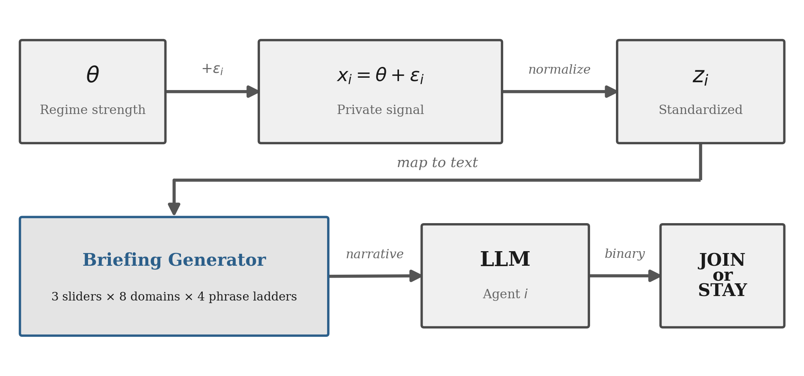
Technical Detail: Briefing Generator Architecture
The Briefing Generator converts a z-score into text through a multi-stage process. Three latent sliders—direction (logistic function of z), clarity (Gaussian centered at z = 0), and coordination (sigmoid)—each output a value in [0, 1]. These drive phrase selection across eight evidence domains. Each domain has a ladder of 4–6 phrases ordered from “strongly suggests regime weakness” to “strongly suggests regime strength.”
The key to continuity: when the slider sits between two phrases, the generator probabilistically selects one or the other, with probability proportional to the slider position. Across eight independent domains, this “dithering” produces a near-continuous mapping from signal to text, even though each individual phrase is discrete.
Models
Seven LLMs serve as experimental subjects, spanning multiple model families and sizes:
| Model | Family | Parameters |
|---|---|---|
| Mistral Small | Mistral | 22B |
| Llama 3.1 8B | Meta | 8B |
| GPT-4o Mini | OpenAI | undisclosed |
| Qwen 2.5 7B | Alibaba | 7B |
| DeepSeek V3 | DeepSeek | 671B (MoE) |
| Hermes 3 8B | Nous Research | 8B |
| Trinity v0.2 | Cobalt Robotics | undisclosed |
Treatments
Five experimental conditions test different aspects of the game:
- Pure — Standard global game: private signals, simultaneous decisions
- Communication — Pre-play messaging round on a network before decisions
- Scramble — Briefings randomly permuted across agents (destroys signal content)
- Flip — Z-scores negated (inverts the signal)
- Cost/Benefit sweep — Same text, different payoff narratives
4Results
The Sigmoid
The central empirical finding: LLM join rates trace out a sigmoid as a function of regime strength θ, closely tracking the theoretical attack mass A(θ). The mean correlation across all seven models is r = +0.80 (p < 0.001 for every model).
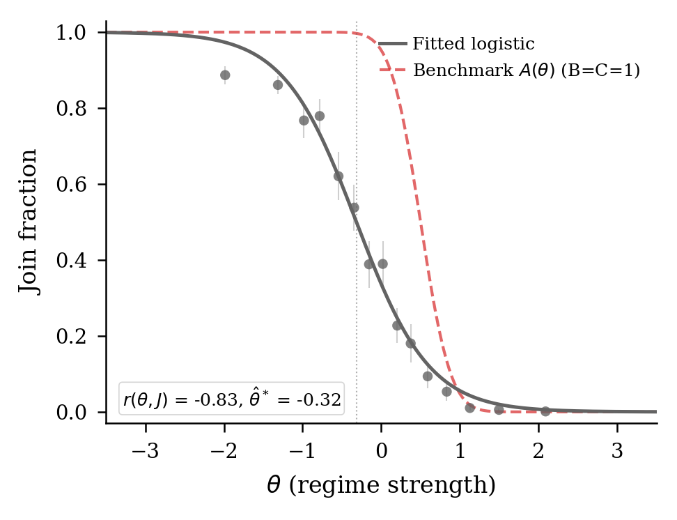
Cross-Model Consistency
All seven models produce the sigmoid pattern independently. This is not a property of one architecture or training set—it emerges reliably across model families, sizes, and training approaches.
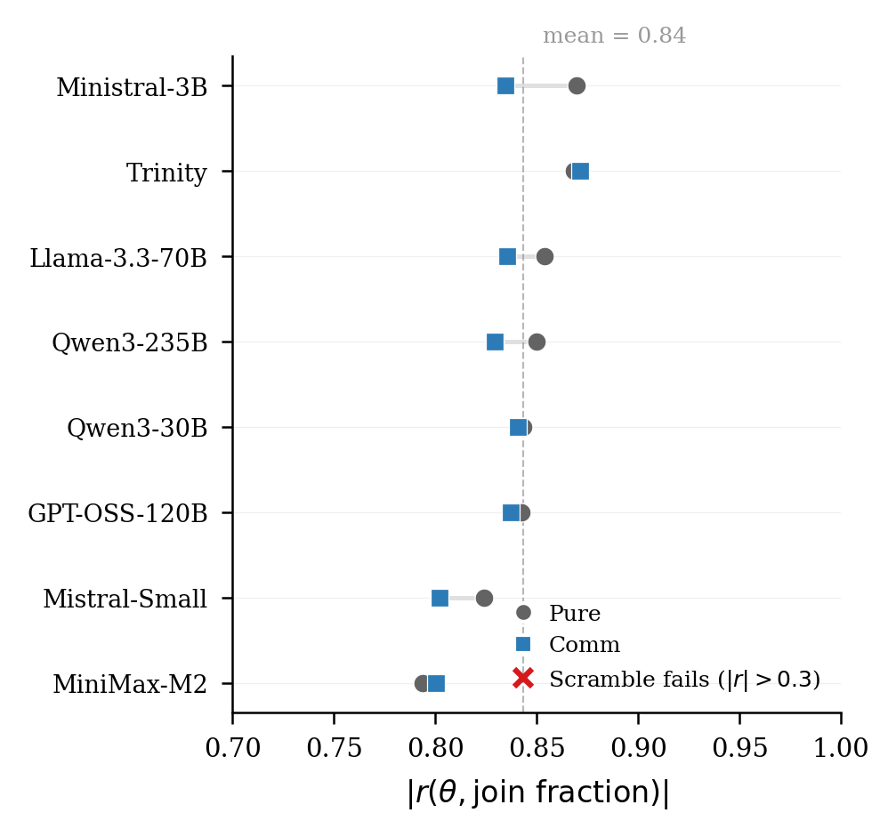
BNE vs. Level-k
Do the LLMs approximate Bayesian Nash Equilibrium (BNE) or simpler Level-k reasoning? The data favor BNE:
| Model of reasoning | RMSE |
|---|---|
| Bayesian Nash Equilibrium | 0.199 |
| Level-1 | 0.307 |
| Level-2 | 0.348 |
BNE achieves the lowest root mean squared error against empirical join rates. Level-k models, which assume agents best-respond to naive opponents, systematically over- or under-predict joining.
5Identification
Scramble: Breaking the Signal
If LLMs are truly responding to signal content, scrambling the briefings—randomly permuting which agent gets which text—should destroy the correlation. It does. Under scrambled briefings, the correlation with theoretical attack mass collapses to r ≈ 0.
Flip: Inverting the Signal
Negating the z-scores before generating briefings should invert the sigmoid. It does: the correlation reverses to r = −0.72. Agents who should join now stay, and vice versa.
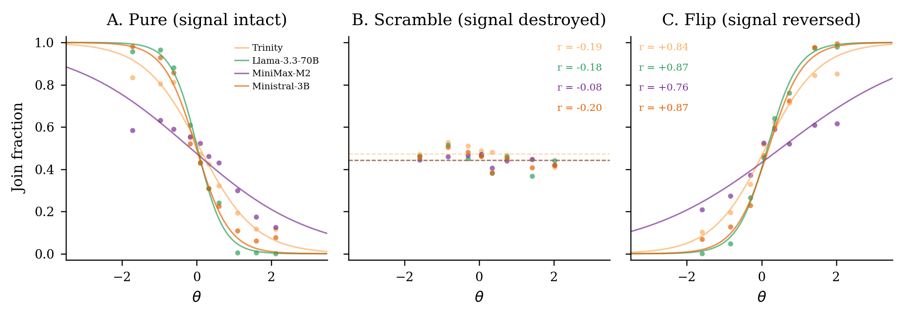
The Cost/Benefit Test
The most powerful identification test: hold the briefing text constant but change the payoff narrative. When benefits rise relative to costs, theory predicts the cutoff θ* shifts—more agents should join. The empirical cutoffs track the theoretical prediction with r = +0.97, producing a 50 pp swing in join rates from identical text.
This test is decisive against the “text classifier” hypothesis. Any model that simply classifies briefing sentiment as positive/negative cannot explain why the same text produces different decisions when the payoff framing changes.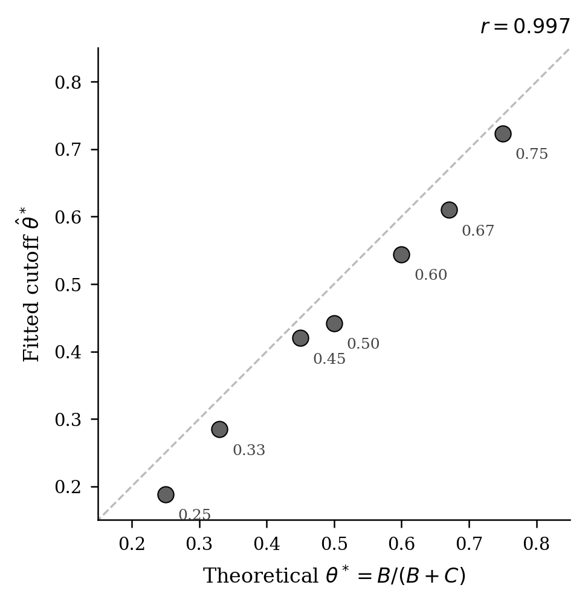
6Communication
What happens when agents can talk before deciding? In the communication treatment, agents exchange messages on a Watts-Strogatz small-world network before making their JOIN/STAY decisions.
The key finding: communication preserves the sigmoid structure. The signal-to-action mapping remains intact, suggesting that pre-play messaging does not destroy private information or create herding. Instead, agents appear to use messages as additional (noisy) signals that refine rather than replace their private information.
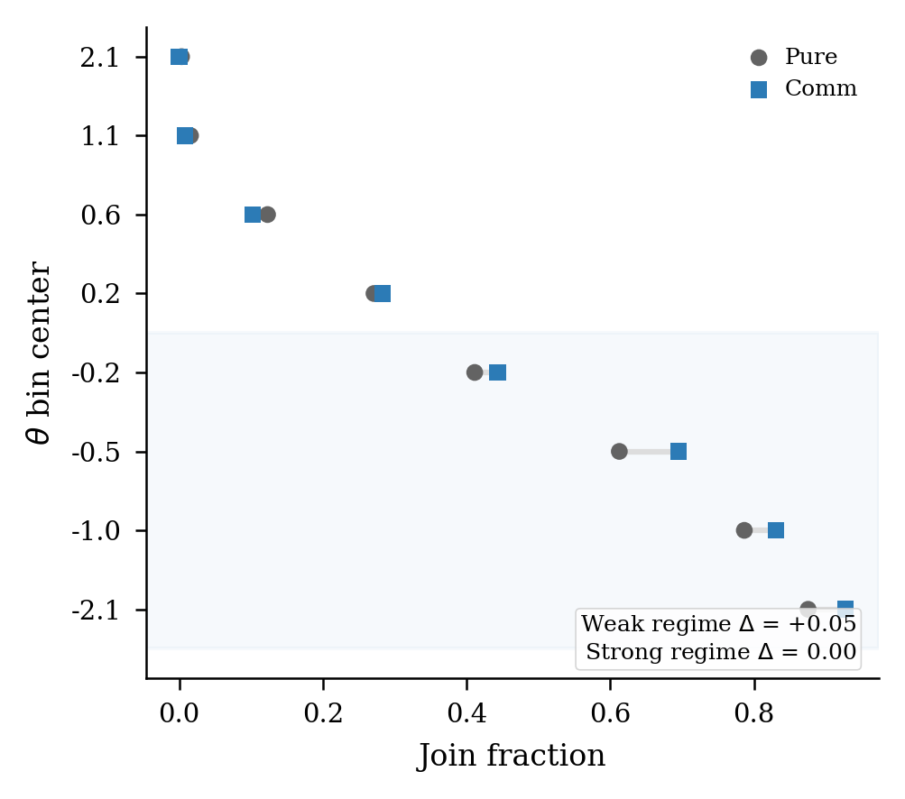
7Information Design
If LLMs play threshold strategies, a social planner who controls the information environment should be able to shift equilibrium outcomes. This is the Bayesian persuasion angle: redesign the signal structure to change behavior.
I test several information designs:
- Stability design — Compress signals near θ* to discourage coordination
- Instability design — Sharpen signals near θ* to encourage coordination
- Censorship — Suppress signals that suggest regime weakness
- Public signal — Add a common signal visible to all agents
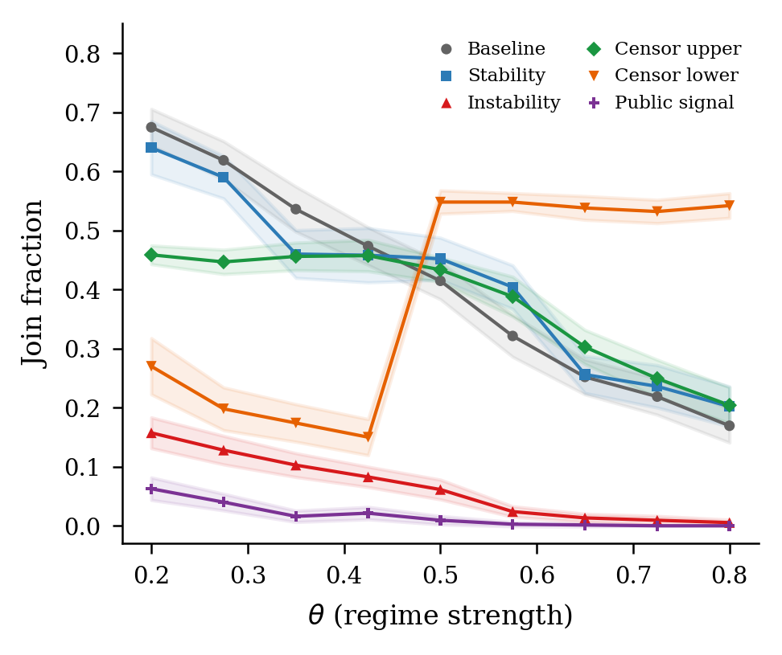
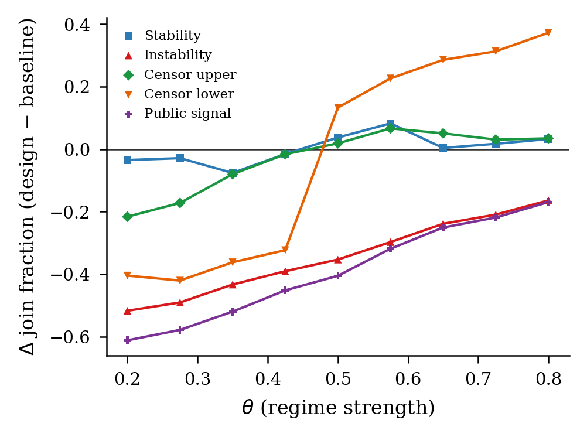
Technical Detail: Information Design Implementation
Each information design is implemented as a set of parameter modifiers
applied to the Briefing Generator through a
ThetaAdaptiveBriefingGenerator. This wrapper uses a
Gaussian proximity weight centered at the target θ* to
smoothly interpolate between the baseline and modified parameters.
For example, the stability design increases the clarity_width parameter (making signals noisier near θ*) and shifts the cutoff_center upward (biasing toward STAY). The instability design does the reverse. Censorship selectively suppresses evidence domains that indicate regime weakness.
Decomposition
Which channels of the information design matter most? By enabling one parameter modification at a time, we can decompose the total treatment effect into contributions from each channel.
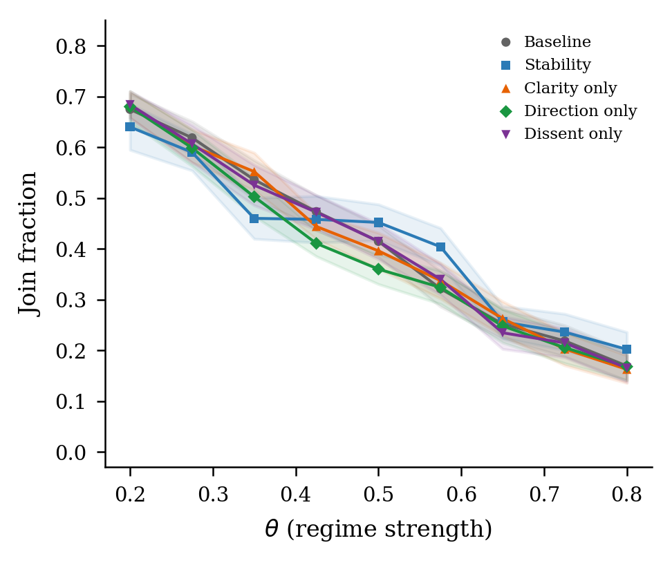
8Surveillance
The most striking result concerns surveillance. When agents are told that their messages may be monitored, their actions change dramatically but their beliefs do not.
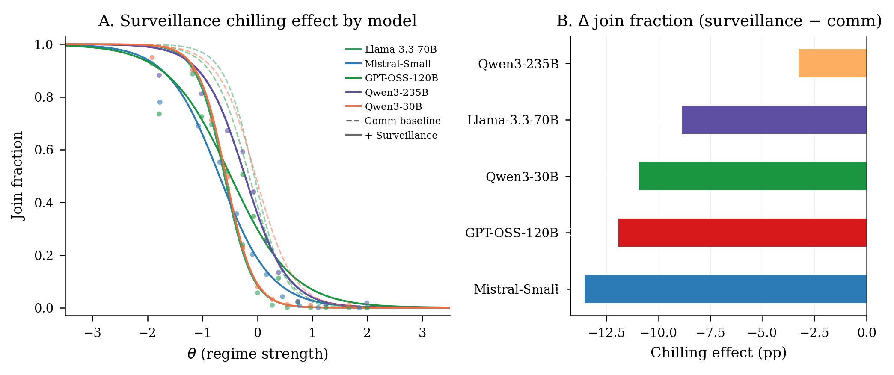
The Belief–Action Wedge
This is the core finding of the surveillance analysis. Under surveillance:
- Expressed joining falls by −13.5 pp on average
- First-order beliefs (own assessment of regime strength) shift by < 1 pp
- Second-order beliefs (what agents think others believe) shift by < 1 pp
Agents self-censor: they change behavior without changing beliefs. But crucially, they interpret other agents’ silence as genuine rather than strategic. This creates a strategic update gap—each agent knows it is self-censoring, but assumes others are not.
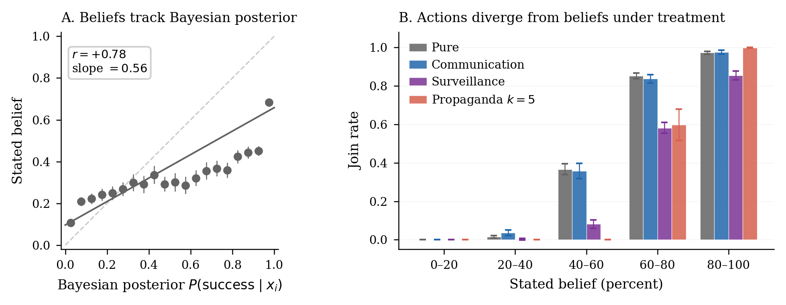
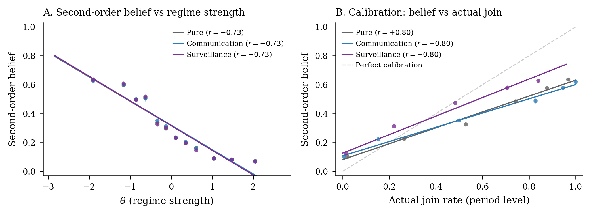
Surveillance × Censorship
When surveillance is combined with censorship, the interaction is super-additive: the combined effect exceeds the sum of individual effects. The regime’s two instruments reinforce each other.
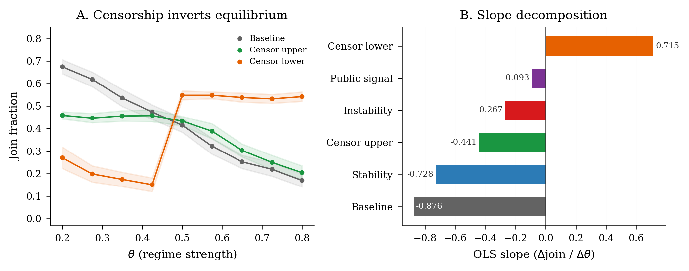
9Propaganda
The regime can also inject propaganda agents—plants who always advocate staying. The key finding: propaganda saturates quickly.
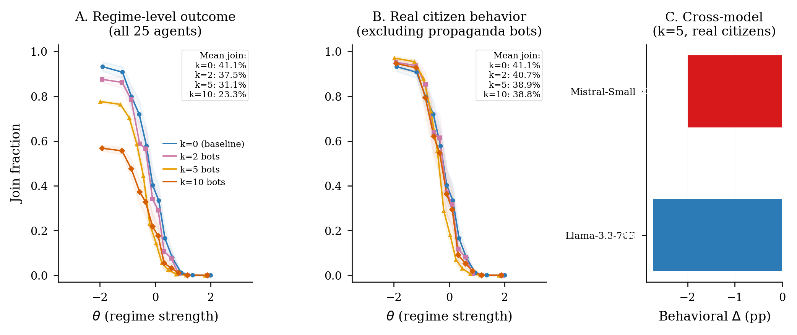
This contrasts sharply with surveillance, which does not saturate. The mechanism is different: propaganda is a signal that can be discounted, while surveillance is a cost that changes the payoff structure. You can learn to ignore propaganda; you cannot ignore the risk of punishment.
10Conclusion
Seven LLM models, embedded in a canonical regime-change coordination game, play threshold strategies consistent with Bayesian Nash Equilibrium. The correlation between empirical join rates and theoretical attack mass averages r = +0.80 across models, survives falsification tests, and reflects payoff structure rather than text sentiment.
The information channel that enables coordination is also the channel through which regimes suppress it. A social planner can reshape equilibrium outcomes by redesigning the signal structure. Surveillance creates self-censorship—a wedge between beliefs and actions—while propaganda saturates as agents learn to discount planted signals.
The deeper implication: LLMs are not just text classifiers that happen to correlate with game-theoretic predictions. They process payoff-relevant information, respond to strategic incentives, and exhibit the belief-action separation that characterizes rational agents under institutional constraints. The same machinery that enables coordination also makes it suppressible.